Texto extraído da edição fornecida, sem atualização normativa. Consulte a página original para conferir tabelas, formulários e instruções ilustradas. A numeração dos links corresponde à página do arquivo PDF.
Apresentação
PDF · p. 1Esta página contém conteúdo gráfico. Consulte a reprodução original abaixo.
Legislação
PDF · p. 2Lei nº 8.112, de 11 de dezembro de
1990 e suas alterações.
Portaria SEGRT/MGI nº 619, de 9
de março de 2023
(Redistribuição)
1. Legislação Básica 2
É dever do servidor, da Organização Militar (OM) e da Região Militar
(RM) ler e acompanhar a atualização da legislação que se refere
aos assuntos tratados neste Caderno de Orientação.
São referências de legislação:
Ver página original — tabelas, imagens e diagramas
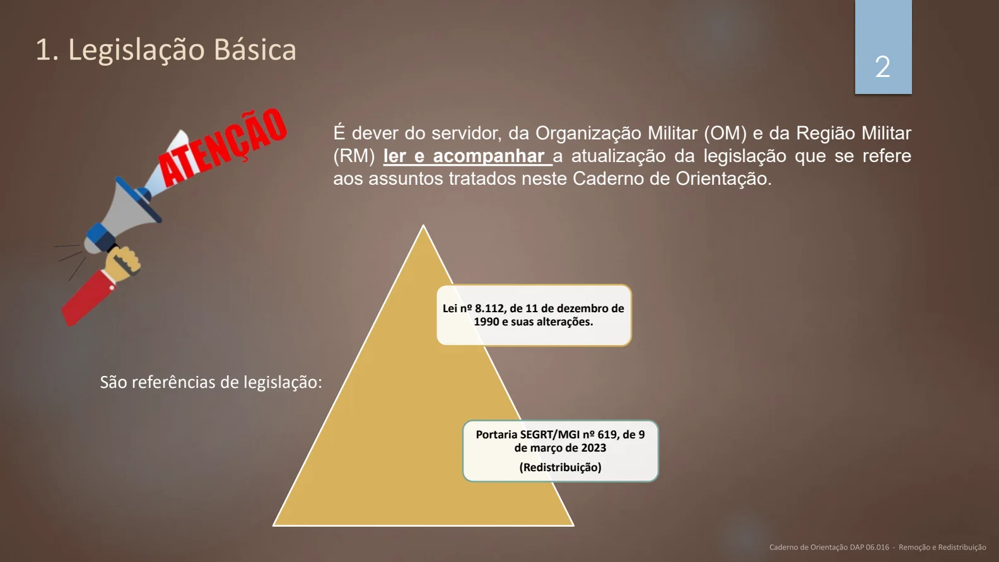
Conceitos
PDF · p. 32. Conceito
2.1. REMOÇÃO:
É o deslocamento do servidor, a pedido ou de ofício, no âmbito
do mesmo quadro, com ou sem mudança de sede.
2.2. REDISTRIBUIÇÃO:
É o deslocamento de cargo de provimento efetivo, ocupado ou vago
no âmbito do quadro geral de pessoal, para outro órgão ou entidade
do mesmo Poder, com prévia apreciação do órgão central do
SIPEC, observados os preceitos legais.
Modalidades de remoção
PDF · p. 43. MODALIDADES DE REMOÇÃO E SEUS REQUISITOS:
3.1. DE OFÍCIO:
a) interesse da Administração;
b) solicitação da OM de destino;
c) parecer favorável do Comando da RM enquadrante e da OM de origem; e
d) exigência de vaga no QLPC da OM de destino.
3.2. A PEDIDO DO SERVIDOR, A CRITÉRIO DA ADMINISTRAÇÃO:
a) requerimento do servidor (conforme item 5.1);
b) interesse da Administração;
c) parecer favorável do Comando da RM, da OM de origem e da OM de destino; e
d) exigência de vaga no QLPC da OM de destino.
Ver página original — tabelas, imagens e diagramas
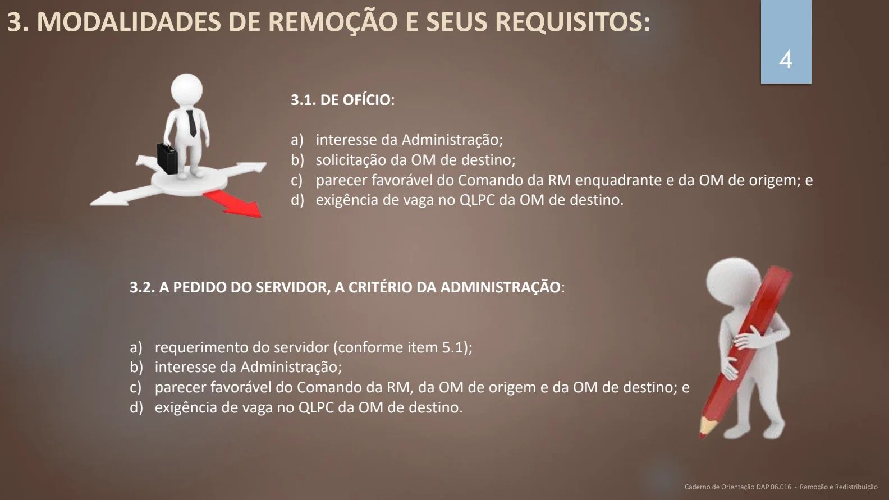
Modalidades de remoção
PDF · p. 53. MODALIDADES DE REMOÇÃO E SEUS REQUISITOS (cont.):
3.3. A PEDIDO DO SERVIDOR, INDEPENDENTEMENTE DO INTERESSE DA ADMINISTRAÇÃO:
3.3.1. Para acompanhar cônjuge ou companheiro :
a) requerimento do servidor (conforme item 5.1);
b) cônjuge também deve ser servidor público civil ou militar, de qualquer dos Poderes da
União, dos Estados, do Distrito Federal e dos Municípios, que foi deslocado no interesse da
Administração;
c) documento comprobatório de deslocamento do cônjuge, certidão de casamento ou
declaração de união estável e certidão de nascimento dos filhos;
d) existência de atividade compatível com atribuições do servidor na OM de destino; e
e) existência de vaga no QLPC da OM de destino.
3.3.1. Por motivo de saúde do servidor, cônjuge, companheiro ou dependente que viva às suas
expensas e conste do seu assentamento funcional:
a) requerimento servidor (conforme item 5.1)
b) condicionada à comprovação por junta médica oficial;
c) existência de atividade compatível com atribuições do servidor na OM de destino;
d) existência de vaga no QLPC da OM de destino.
Ver página original — tabelas, imagens e diagramas
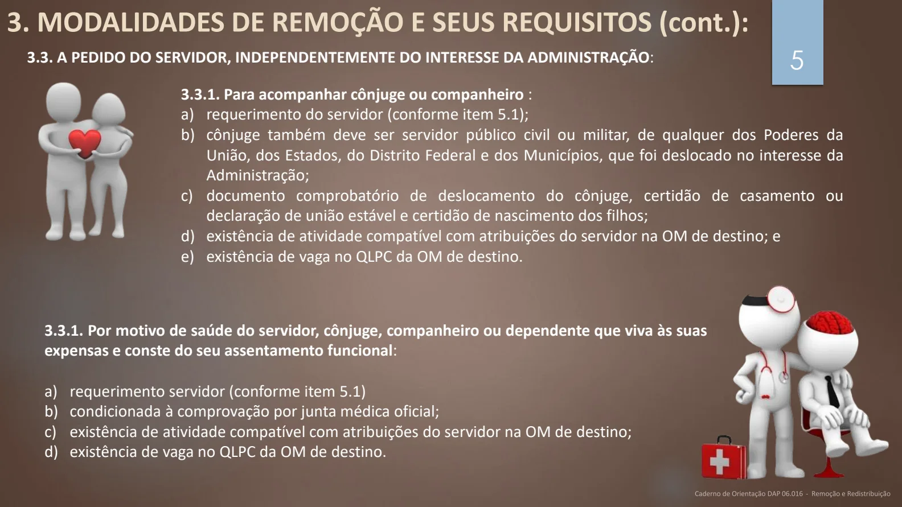
Requisitos para redistribuição
PDF · p. 64. REQUISITOS PARA A REDISTRIBUIÇÃO:
Equivalência de vencimentos
Interesse da administração
Manutenção da essência das atribuições do cargo
Vinculação entre os graus de responsabilidade
e complexidade das atividades
Mesmo nível de escolaridade, especialidade
ou habilitação profissional
Compatibilidade entre as atribuições do cargo e
as finalidades institucionais do órgão ou entidade.
Informações gerais
PDF · p. 74. INFORMAÇÕES GERAIS
4.1. REMOÇÃO:
a) o servidor removido para outra localidade da federação terá, no
mínimo, 10 (dez) e, no máximo, 30 (trinta) dias de prazo, contados da
publicação do ato, para a retomada do efetivo desempenho das
atribuições do cargo, incluído nesse prazo o tempo necessário para o
deslocamento para a nova sede;
b) o prazo de trânsito será definido pelo Diretor de Assistência ao
Pessoal no ato que conceder a remoção, sendo facultado ao servidor
declinar deste prazo; e
c) na hipótese de o servidor encontrar-se de licença ou afastado
legalmente, o prazo de trânsito será contado a partir do término do
impedimento.
Ver página original — tabelas, imagens e diagramas
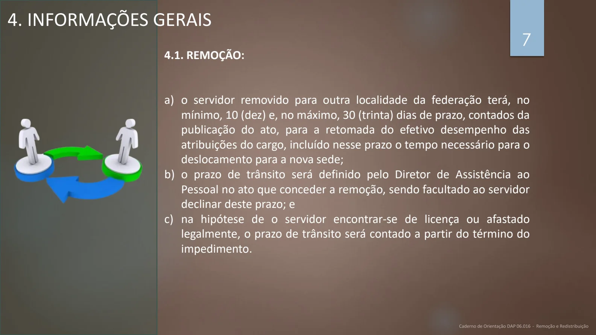
Informações gerais
PDF · p. 84. INFORMAÇÕES GERAIS (cont.)
4.2. REDISTRIBUIÇÃO:
a) a redistribuição que envolva cargo vago será efetivada mediante ato conjunto do órgão central do
Sistema de Pessoal Civil da Administração Federal - Sipec e dos órgãos e entidades da
Administração Pública Federal envolvidos.
b) a redistribuição de cargo efetivo ocupado será efetivada mediante portaria conjunta dos Ministros
de Estado ou dos dirigentes máximos dos órgãos e entidades envolvidos, permitida a
subdelegação.
c) a redistribuição de cargo efetivo ocupado entre entidades vinculadas a um mesmo Ministério será
efetivada por portaria do respectivo Ministro de Estado.
d) a portaria de redistribuição deverá ser publicada no Diário Oficial da União.
e) o cargo redistribuído NÃO PODE ser enquadrado em outro plano de carreira e em
plano especial de cargos ou carreira para os quais se exija concurso público específico.
f) a redistribuição deverá observar a legislação específica dos cargos, das carreiras e dos órgãos ou
entidades envolvidas.
g) para a redistribuição de cargo ocupado ou vago deverá haver a oferta de cargo efetivo, ocupado
ou vago, observados os requisitos deste caderno.
Ver página original — tabelas, imagens e diagramas
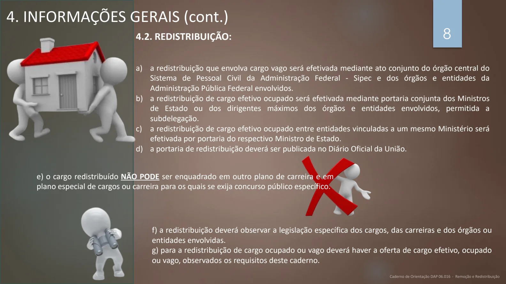
Informações gerais
PDF · p. 94. INFORMAÇÕES GERAIS (cont.)
4.1. REDISTRIBUIÇÃO:
g) na redistribuição de cargo ocupado, deverá haver concordância expressa dos servidores ocupantes dos cargos.
h) O cargo ocupado SOMENTE poderá ser redistribuído se o servidor que o ocupa preencher os
seguintes requisitos:
1 - não esteja em gozo de licença ou afastamento;
2 - tenha cumprido o período de 3 (três) anos do estágio probatório; e
3 - não houver sido redistribuído nos últimos três anos.
Ver página original — tabelas, imagens e diagramas
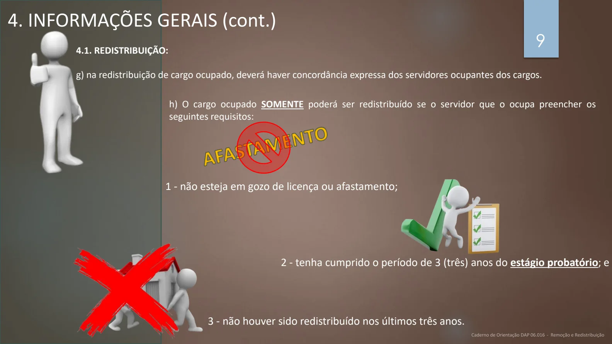
Informações gerais
PDF · p. 104. INFORMAÇÕES GERAIS (cont.)
4.1. REDISTRIBUIÇÃO:
i) No caso de redistribuição de cargo ocupado por servidor que esteja respondendo a processo administrativo disciplinar,
caberá prévia consulta à unidade correcional do órgão ou entidade de origem, de modo a prevenir eventuais prejuízos ao
regular andamento do procedimento disciplinar em curso;
j) quando houver concurso público vigente ou em andamento, não poderá ser utilizado cargo vago de mesma especialidade ou
área de conhecimento para fins de redistribuição;
k) fica vedada a redistribuição de cargos do quadro em extinção da União nos termos do art. 17, §5º, da Lei nº 13.681, de 18 de
junho de 2018;
l) o servidor deverá continuar exercendo suas atividades no órgão de origem até a sua entrada em efetivo exercício no órgão
ou entidade cujo cargo foi redistribuído;
m) o servidor cujo cargo foi redistribuído, que deva ter exercício em outro município, terá, no mínimo, 10 (dez) e, no máximo,
30 (trinta) dias de prazo, contados da publicação do ato, para a retomada do efetivo exercício, incluído nesse prazo o tempo
necessário para o deslocamento para a nova sede;
n) o órgão de destino deverá informar ao órgão de origem a data da efetiva entrada em exercício do servidor cujo cargo foi
redistribuído;
o) efetivada a redistribuição, o órgão ou entidade de destino passará a efetuar o pagamento da remuneração do servidor;
p) o órgão ou entidade de origem do servidor encaminhará para o órgão ou entidade de destino, no prazo de 30 (trinta) dias, a
contar da efetivação do ato de redistribuição, todo o acervo funcional do servidor até a data da redistribuição; e
q) as unidades de gestão de pessoas dos órgãos e das entidades de origem e de destino, após a publicação da portaria, deverão
adotar imediatamente todas as providências cabíveis quanto às atualizações sistêmicas pertinentes.
Ver página original — tabelas, imagens e diagramas
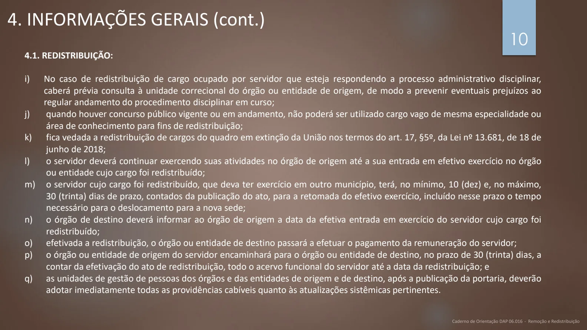
Documentos para remoção
PDF · p. 115. DOCUMENTOS NECESSÁRIOS - REMOÇÃO
REMOÇÃO A PEDIDO
DOCUMENTO RESPONSÁVEL PELO
FORNECIMENTO/ELABORAÇÃO OBSERVAÇÕES
Requerimento Servidor Em conformidade com o item 5.1
Documento comprobatório de deslocamento do
cônjuge/certidão de casamento ou declaração de
união estável (quando para acompanhar o
cônjuge).
Servidor -
Informação do Requerimento OM Em conformidade com o item 5.1
Ata de inspeção de saúde (quando por motivo de
saúde) Junta de Inspeção de Saúde de Guarnição -
Portaria de remoção DAP -
REMOÇÃO DE OFÍCIO
DOCUMENTO RESPONSÁVEL PELO
FORNECIMENTO/ELABORAÇÃO OBSERVAÇÕES
DIEx de solicitação do servidor à origem OM de destino -
Manifestação das áreas impactadas pela remoção
do servidor
OM de origem
RM de Origem
Outras áreas impactadas
-
Informação do Requerimento OM Em conformidade com o item 5.1
Ata de inspeção de saúde (quando por motivo de
saúde) Junta de Inspeção de Saúde de Guarnição -
Portaria de remoção DAP -
Ver página original — tabelas, imagens e diagramas
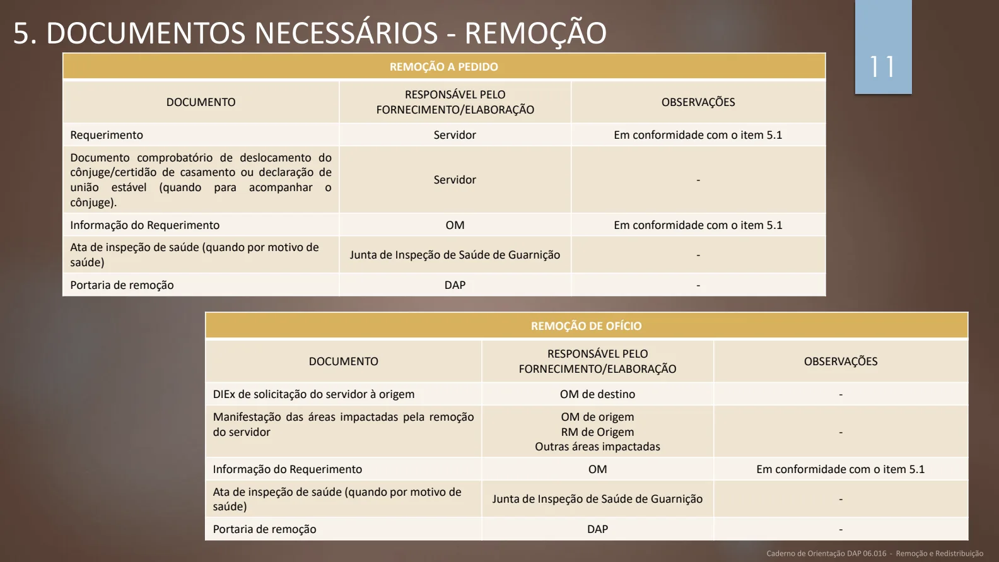
Documentos para remoção
PDF · p. 125.1. REDIGINDO OS DOCUMENTOS NO SPED (Requerimento e Informação)
1
2
4
5
Requerimento Informação
3
6
Ver página original — tabelas, imagens e diagramas
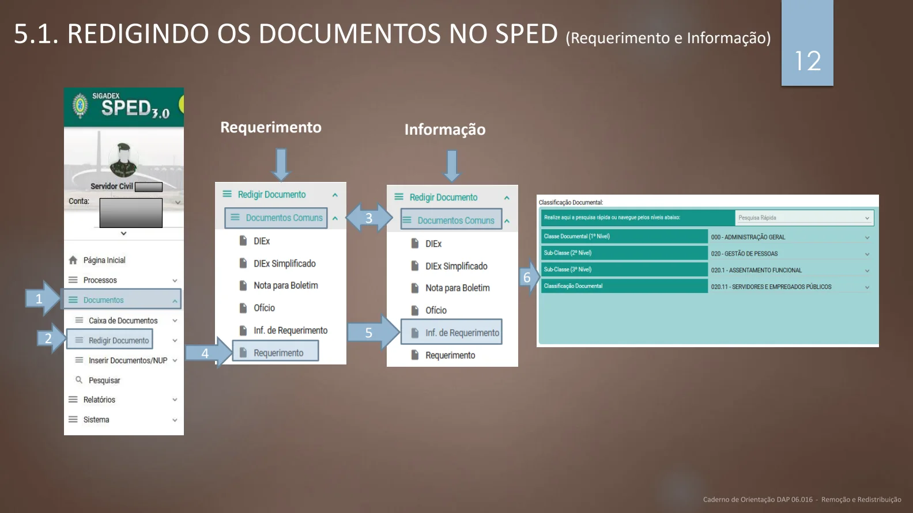
Documentos para redistribuição
PDF · p. 136. DOCUMENTOS NECESSÁRIOS - REDISTRIBUIÇÃO
DOCUMENTO RESPONSÁVEL PELO
FORNECIMENTO/ELABORAÇÃO OBSERVAÇÕES
Ofício Órgão interessado -
Parecer favorável RM, ODS e OM RM/ODS/OM -
Portaria
de redistribuição entre cargo ocupado
e cargo vago
Ministérios envolvidos na redistribuição
Anexo A
de redistribuição de cargos ocupados Anexo B
Ver página original — tabelas, imagens e diagramas
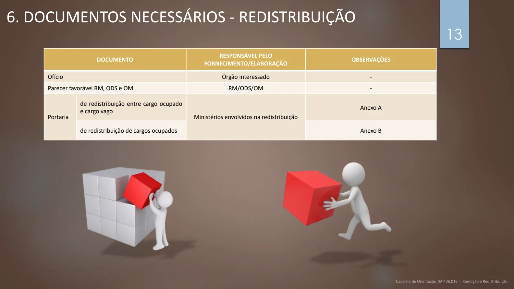
Tramitação da remoção
PDF · p. 147. TRAMITAÇÃO – REMOÇÃO A PEDIDO
SERVIDOR
•Elaborar o
requerimento
em
conformidade
com o item
5.1 deste
Caderno de
Orientação
•Instruir o
processo com
os
documentos
comprobatóri
o
OM
•Receber o
requerimento
do interessado
•Elaborar a
informação do
requerimento,
em
conformidade
com o item 5.1
deste Caderno
de Orientação
•Consultar a
ODS
enquadrante
•Emitir o
parecer,
organizar o
processo
•Encaminhar o
processo para a
RM
RM
•Emitir parecer
•Quando por
motivo de
saúde do
servidor,
cônjuge,
companheiro
ou
dependente,
remetê-lo à
DAP, via
Diretoria de
Saúde, para
realização da
inspeção de
saúde
DAP
•Expedir portaria
de remoção ou
despacho de
indeferimento
•Publicar a
portaria ou o
despacho no
Bol/DGP
•Informar à OM
de origem sobre
a remoção
•Informar à OM
de destino sobre
a remoção
OM ORIGEM
•Atualizar o
cadastro, com o
desligamento
do servidor no
sistema
•Informar à DAP
a data do
desligamento
do servidor
OM DE DESTINO
•Atualizar o
cadastro, com a
recepção do
servidor no
sistema
•Informar à DAP
data de
apresentação do
servidor
DAP
•Auditar e
arquivar o
processo
Ver página original — tabelas, imagens e diagramas
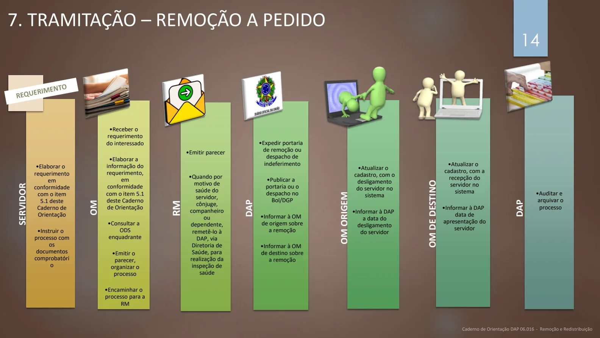
Tramitação da remoção
PDF · p. 158. TRAMITAÇÃO – REMOÇÃO DE OFÍCIO
OM SOLICITANTE/DESTINO
•Instruir o
processo de
solicitação e
encaminhá-lo à
RM e ODS
enquadrantes
RM
•Conferir o
processo
•Emitir parecer
•Encaminhar o
processo para a
DAP
DAP
•Analisar o pleito
•Expedir portaria
de remoção ou o
despacho de
indeferimento
•Publicar a
portaria ou o
despacho no
Bol/DGP
•Informar à OM
de origem sobre
a remoção
•Informar à OM
de destino sobre
a remoção
OM ORIGEM
•Atualizar o
cadastro, com o
desligamento do
servidor no
sistema
•Informar à DAP a
data do
desligamento do
servidor
OM DE DESTINO
•Atualizar o
cadastro, com a
recepção do
servidor no
sistema
•Informar à DAP
data de
apresentação do
servidor
DAP
•Auditar e
arquivar o
processo
Ver página original — tabelas, imagens e diagramas
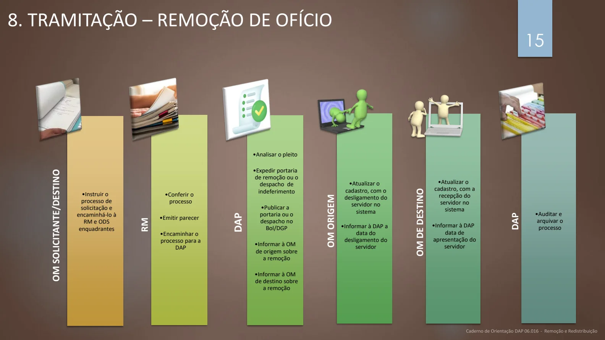
Tramitação da redistribuição
PDF · p. 169. TRAMITAÇÃO – REDISTRIBUIÇÃO (PEDIDO EXTERNO)
ÓRGÃO SOLICITANTE
•Instruir o
processo de
solicitação da
redistribuição
e encaminhá-lo
ao Ministério
da Defesa
MINISTÉRIO DA DEFESA
•Receber o
processo e
encaminhá-lo
ao Gabinete do
Comandante
do Exército.
GAB CMT DO EXÉRCITO
•Receber o
processo e
encaminhá-lo
para a DAP
DAP
•Por meio do DGP
irá solicitar parecer
dos ODS e da OM
de lotação do
servidor
•Havendo
concordância sobre
os pareceres dos
ODS e da OM ,
encaminhar o
processo ao
Ministério da
Defesa, via Gab Cmt
Ex, para elaboração
da portaria
•Não havendo
concordância,
restituir processo
ao Ministério da
Defesa, via Gab Cmt
Ex
MINISTÉRIO DA DEFESA
•Elaborar, assinar e
publicar a portaria
•Se a redistribuição
for entre órgãos
vinculados a
Ministérios
distintos, a portaria
será conjunta
•Entre as entidades
vinculadas ao MD,
a portaria será
somente do
Ministro da Defesa.
DAP
•Informar à OM
de lotação o
número do
ato e do DOU
em que foi
publicado.
OM
•Atualizar o
cadastro, com o
desligamento do
servidor no sistema
•Disponibilizar no
AFD e encaminhar,
no prazo de 30
(trinta) dias, a
contar da
efetivação do ato
de redistribuição,
todo o acervo
funcional do
servidor até a data
da redistribuição
•Informar a DAP
sobre o
desligamento do
servidor .
Ver página original — tabelas, imagens e diagramas
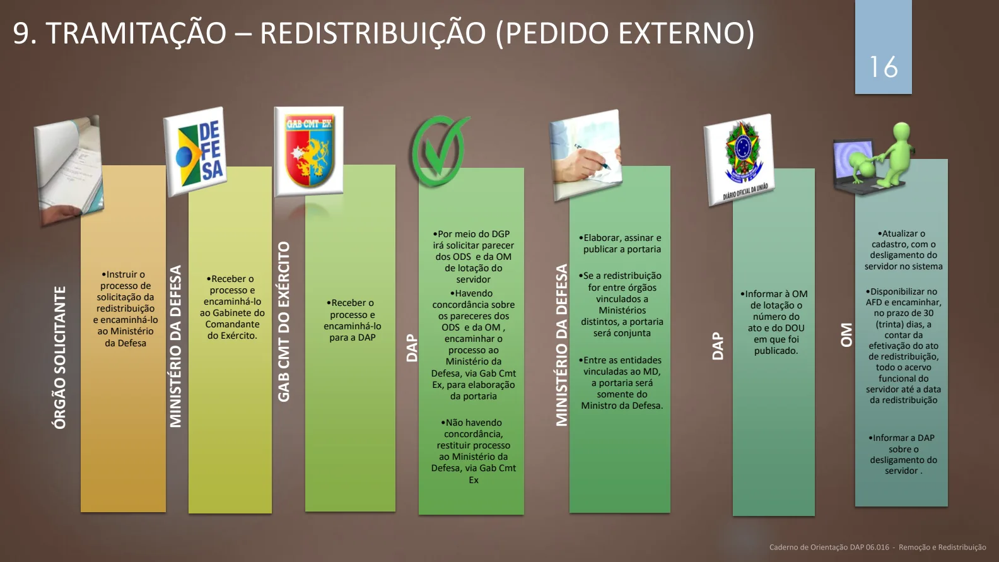
Tramitação da redistribuição
PDF · p. 179. TRAMITAÇÃO – REDISTRIBUIÇÃO (PEDIDO DO C Ex)
ODS/OM
•Instruir o
processo,
conforme item 6
deste caderno,e
encaminhá-lo à
DAP
DAP
•Receber o
processo e
encaminhá-lo ao
Ministério da
Defesa, via
Gabinete do
Comandante do
Exército.
MINSTÉRIO DA DEFESA
•Receber o processo e
enviar o pedido ao
órgão de origem do
servidor
ÓRGÃO DE ORIGEM
•Analisar o processo e
devolver ao Ministério
da Defesa com o
deferimento ou
indeferimento
MINSTÉRIO DA DEFESA
•Em caso de
anuência do
órgão de origem,
elaborar a
portaria e
publicar
•Se a
redistribuição for
entre órgãos
vinculados a
Ministérios
distintos, a
portaria será
conjunta
•Entre as
entidades
vinculadas ao MD,
a portaria será
somente do
Ministro da
Defesa
OM
•Atualizar o cadastro,
com a recepção do
servidor no sistema
•Informar à DAP data
de apresentação do
servidor
Ver página original — tabelas, imagens e diagramas
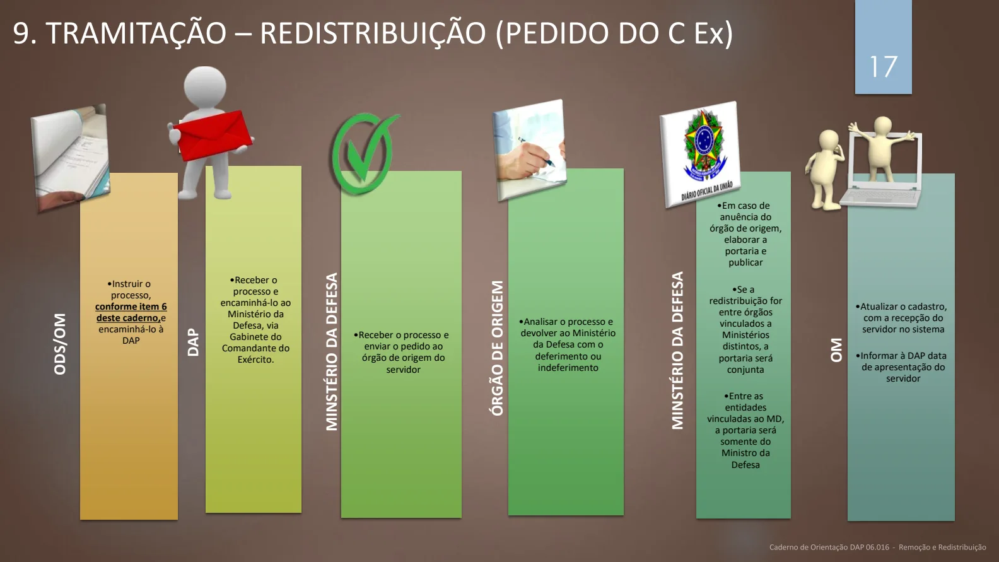
Fontes e elaboração
PDF · p. 18ELABORAÇÃO:
ASSESSORIA TÉCNICA DA SPC/DAP
SUBSEÇÃO DE CADASTRO DA SPC/DAP
MAIO DE 2024
Para conhecer melhor o assunto, leia as
legislações indicadas no início deste caderno, disponíveis no link:
https://legis.sigepe.gov.br/legis/pesquisa-avancada
Ver página original — tabelas, imagens e diagramas
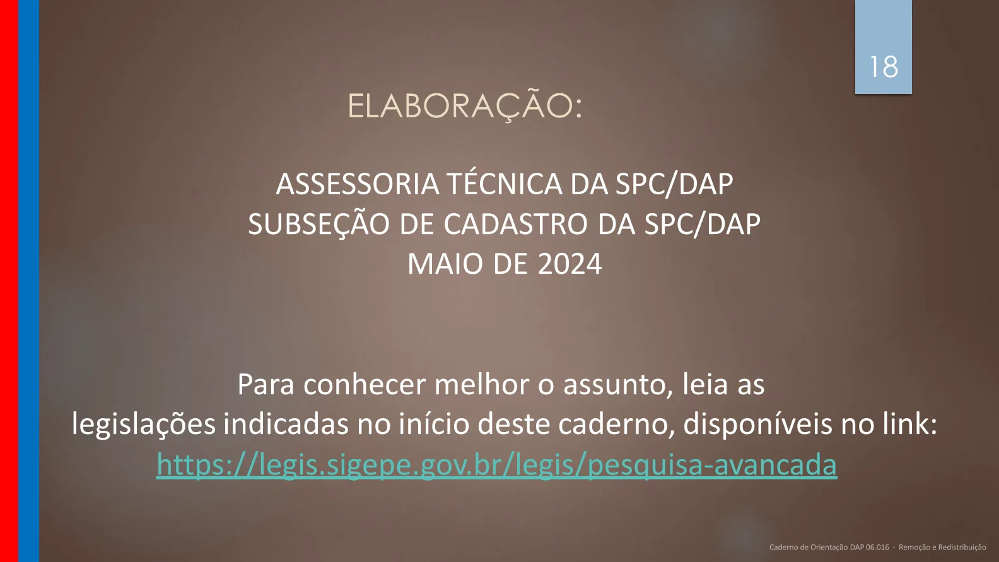
Anexos e portarias
PDF · p. 19ANEXOS
ANEXO A
Portaria de Redistribuição entre Cargo Ocupado e Cargo Vago
MINISTÉRIO DA DEFESA
EXÉRCITO BRASILEIRO
(escalões hierárquicos até a OM expedidora)
(Denominação histórica)
PORTARIA DE REDISTRIBUIÇÃO ENTRE CARGO OCUPADO E CARGO VAGO
O (s)__________________ , no uso das suas atribuições e considerando o disposto no § 2º,
art. 37 da Lei nº 8.112, de 11 de dezembro de 1990, resolve(m):
Art. 1º Redistribuir:
Cargo:
Nome/Nome Social:
Matrícula SIAPE:
Código de vaga:
Do (a) (órgão ou entidade de origem):
Para (órgão ou entidade de destino):
Processo nº:
Cargo:
Código de vaga:
Do (a) (órgão ou entidade de origem):
Para (órgão ou entidade de destino):
Art. 2º Esta Portaria entra em vigor na data da sua publicação.
(assinatura das autoridades - Órgão Central do SIPEC e órgãos e entidades)
*Fonte: PORTARIA SEGRT/MGI Nº 619, DE 9 DE MARÇO DE 2023
Ver página original — tabelas, imagens e diagramas
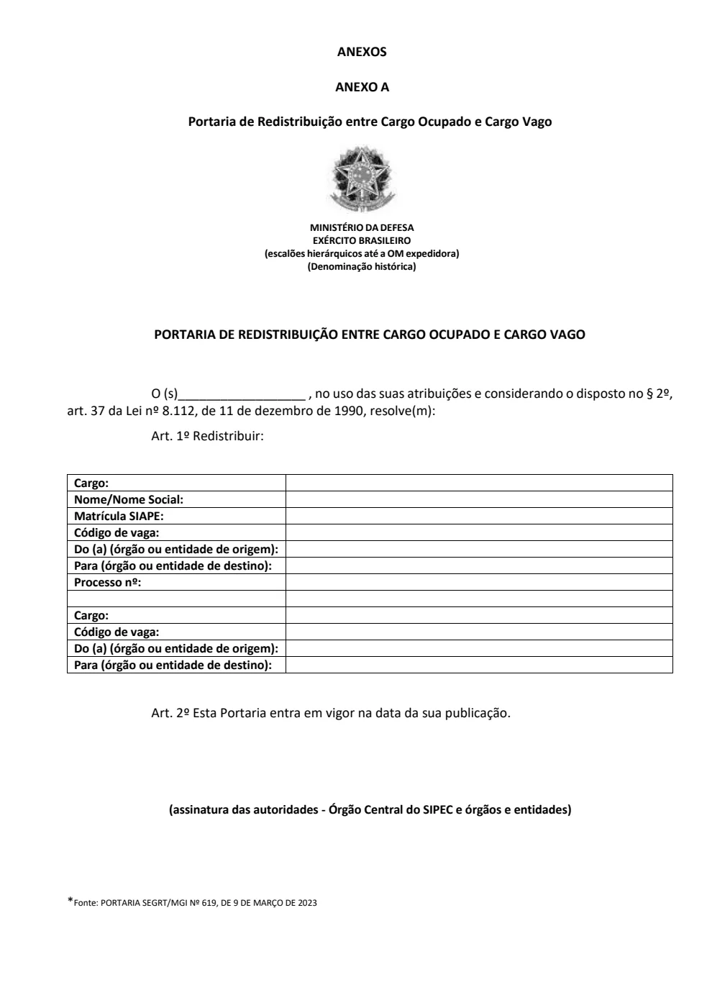
Anexos e portarias
PDF · p. 20ANEXO B
Portaria de Redistribuição de Cargos Ocupados
MINISTÉRIO DA DEFESA
EXÉRCITO BRASILEIRO
(escalões hierárquicos até a OM expedidora)
(Denominação histórica)
PORTARIA DE REDISTRIBUIÇÃO DE CARGOS OCUPADOS
O (s) ______________ , no uso das suas atribuições, e considerando o disposto no art. 37
da Lei nº 8.112, de 11 de dezembro de 1990, resolve(m):
Art. 1º Redistribuir:
Cargo:
Nome/Nome Social:
Matrícula SIAPE:
Código de vaga:
Do (a) (órgão ou entidade de origem):
Para (órgão ou entidade de destino):
Processo nº:
Cargo:
Código de vaga:
Do (a) (órgão ou entidade de origem):
Para (órgão ou entidade de destino):
Art. 2º Esta Portaria entra em vigor na data da sua publicação.
(assinatura das autoridades entre Ministérios e entre órgãos e entidades vinculadas a um mesmo
Ministério)
*Fonte: PORTARIA SEGRT/MGI Nº 619, DE 9 DE MARÇO DE 2023
Ver página original — tabelas, imagens e diagramas
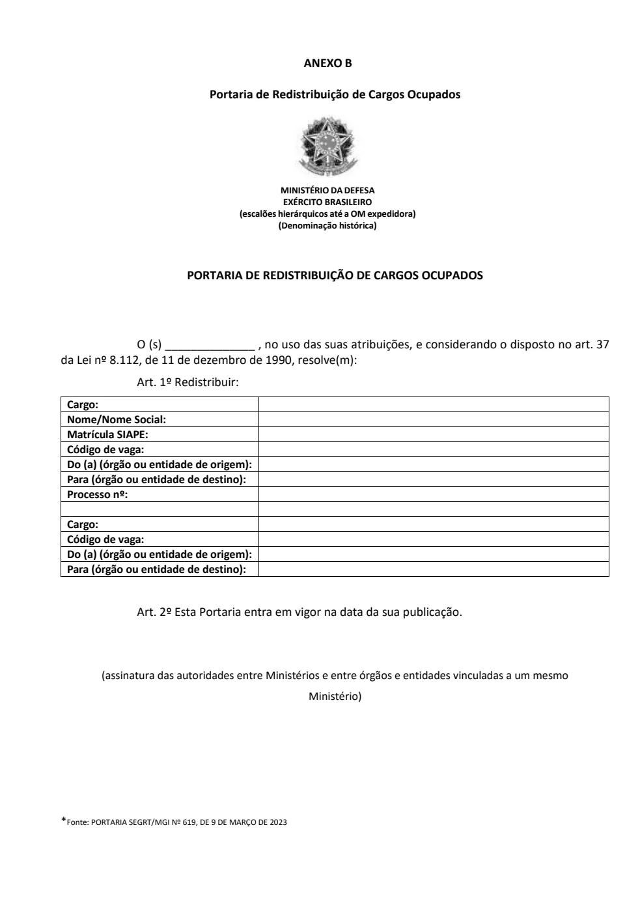